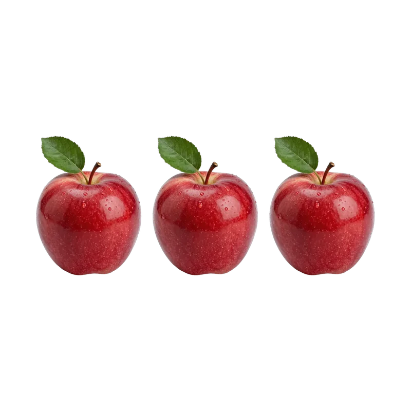
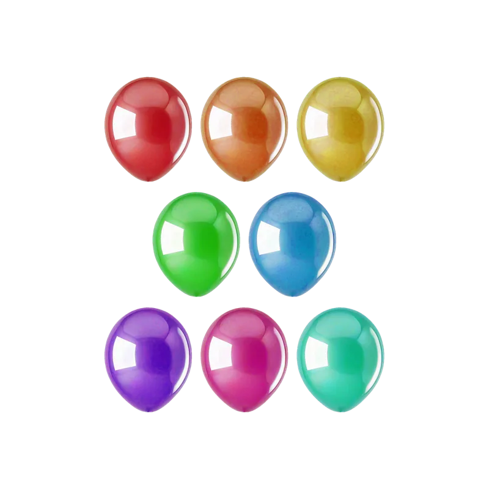
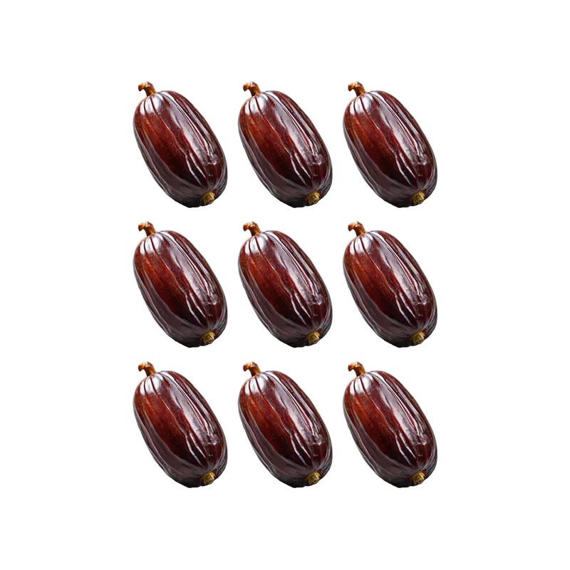
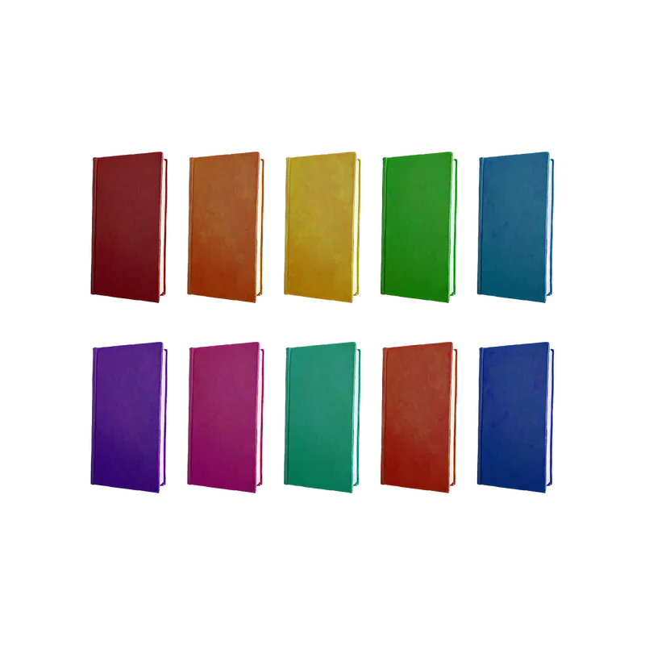

كِتَابِي الْأَوَّل
الْأَرْقَام

صِغَارُ الضَّاد
02-numbers · page 1 · front cover
١
1

جَمَلٌ وَاحِدٌ
02-numbers · page 2 · item 01
٢
2
قِطَّتَانِ اثْنَتَانِ
02-numbers · page 3 · item 02
٣
3

ثَلَاثُ تُفَّاحَاتٍ
02-numbers · page 4 · item 03
٤
4
أَرْبَعَةُ أَقْلَامٍ
02-numbers · page 5 · item 04
٥
5
خَمْسُ بَطَّاتٍ
02-numbers · page 6 · item 05
٦
6
سِتَّةُ مُكَعَّبَاتٍ
02-numbers · page 7 · item 06
٧
7
سَبْعُ فَرَاشَاتٍ
02-numbers · page 8 · item 07
٨
8

ثَمَانِيَةُ بَالُونَاتٍ
02-numbers · page 9 · item 08
٩
9

تِسْعُ تَمَرَاتٍ
02-numbers · page 10 · item 09
١٠
10

عَشَرَةُ كُتُبٍ
02-numbers · page 11 · item 10
كَمْ بَطَّةً؟
02-numbers · page 12 · question 1
كَمْ قِطَّةً؟
02-numbers · page 13 · question 2
كَمْ قَلَمًا؟
02-numbers · page 14 · question 3
هَيَّا نَعُدُّ!
١وَاحِد
٢اثْنَان
٣ثَلَاثَة
٤أَرْبَعَة
٥خَمْسَة
٦سِتَّة
٧سَبْعَة
٨ثَمَانِيَة
٩تِسْعَة
١٠عَشَرَة
02-numbers · page 15 · all together
صِغَارُ الضَّاد
يعدّ طفلك من واحد إلى عشرة مع صور حقيقية وعبارات عربية صحيحة.
من عمر سنة إلى ٣ سنوات
ISBN / BARCODEprinter places it here
02-numbers · page 16 · back cover